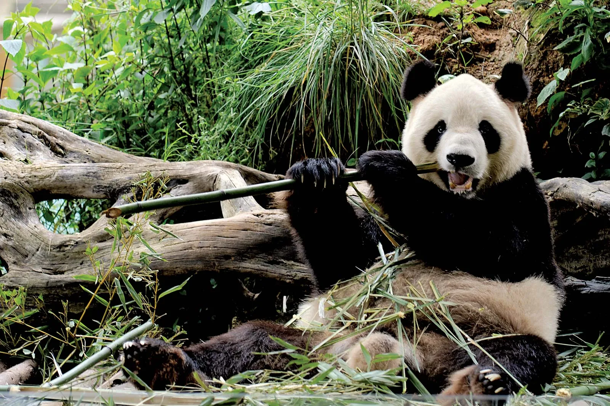

1 Pandas have excellent camouflage for their habitat. ...
2 Their eyes are different to normal bears. ...
3 Cubs are well protected in their first month. ...
4 Pandas can swim and even climb trees. ...
5 A helping hand. ...
6 They spend a lot of their day eating. ...
7 Bamboo is critical to their diet.
**what do pandas eat?
Pandas eat almost nothing but bamboo shoots and leaves. Occasionally they eat other vegetation, fish, or small mammals, but bamboo accounts for 99 percent of their diets. Pandas eat fast, they eat a lot, and they spend about 12 hours a day doing it.
Where do pandas live?
Giant panda | Smithsonian's National Zoo and Conservation ...
central China
Native Habitat
Giant pandas live in a few mountain ranges in south central China, in Sichuan, Shaanxi and Gansu provinces. They once lived in lowland areas, but farming, forest clearing and other development now restrict giant pandas to the mountains.

cute bears to every one who helps save these beautiful creatures
Where do pandas live hot or cold?
Giant pandas experience heat stress when temperatures climb above 25 degrees Celsius (77 F). “They have to live at temperatures below that to stay healthy,” Spotila said. “In nature, they actively seek out cool areas (microhabitats) in summer and move to higher elevations to avoid heat.”